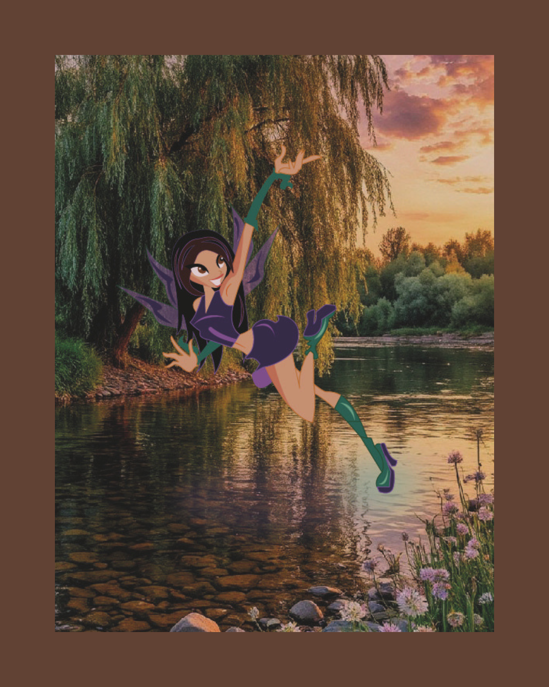
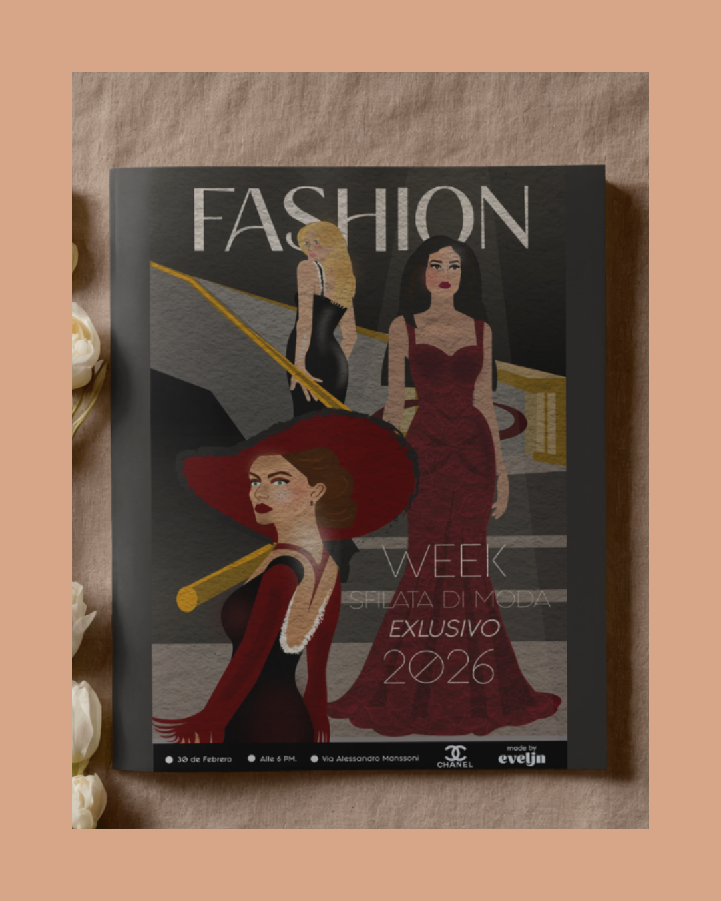
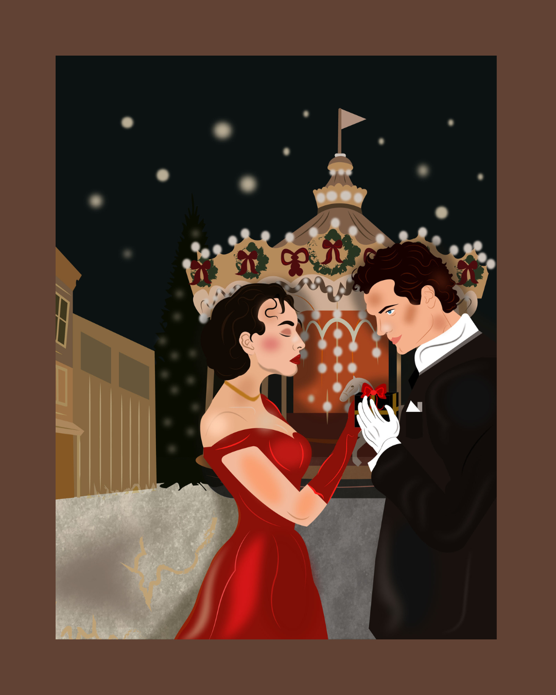
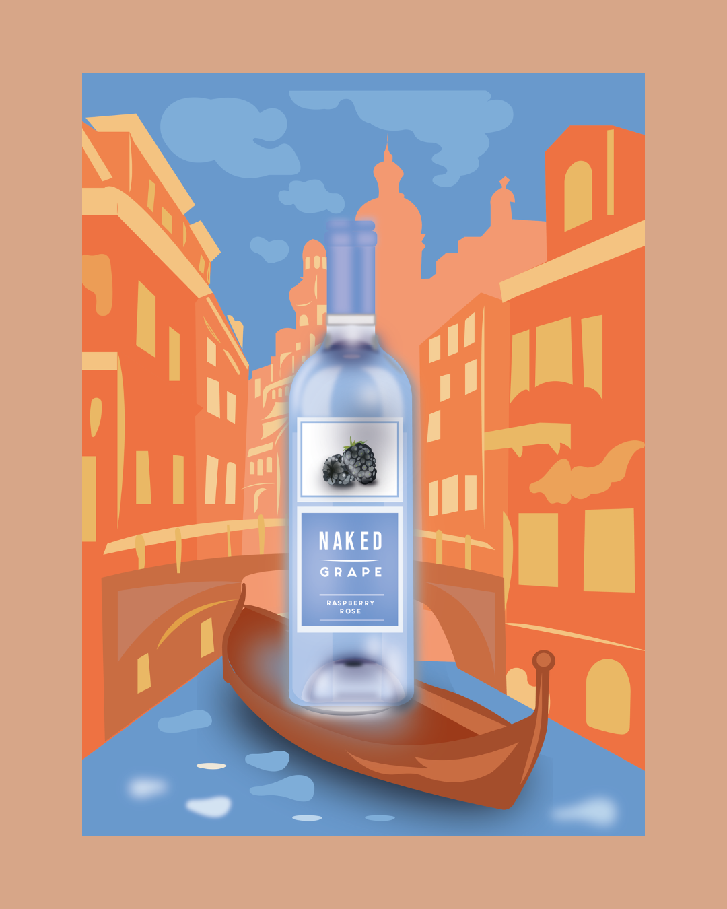
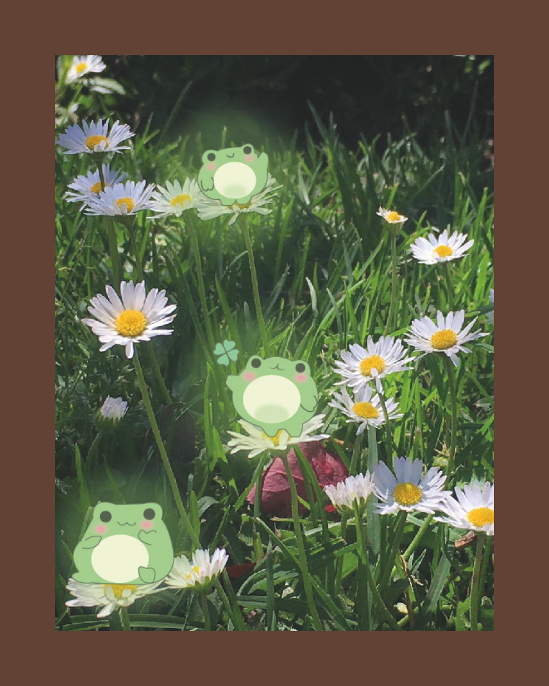
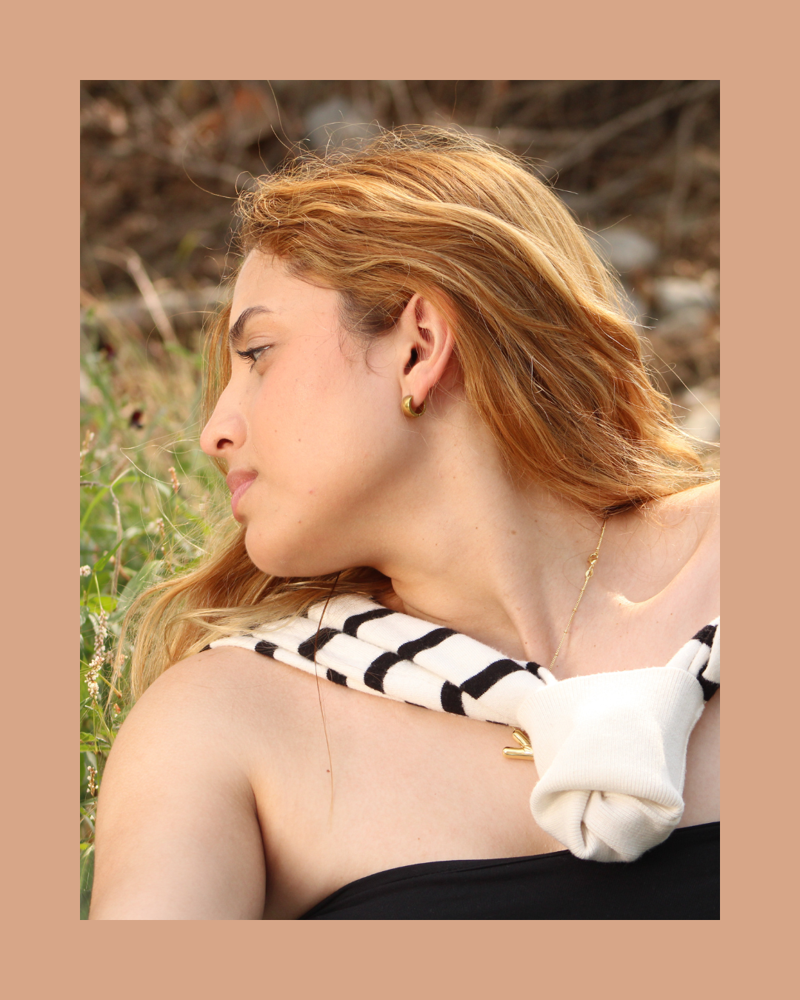
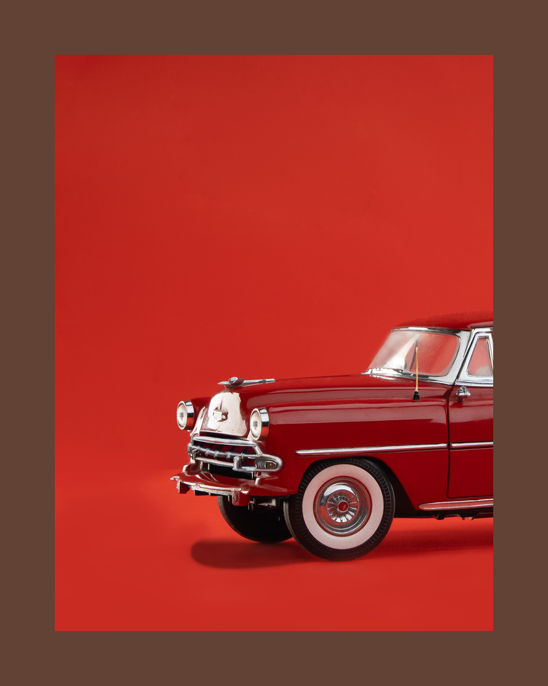
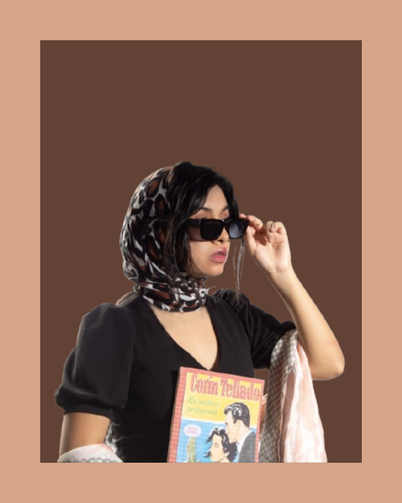

WINGS
FAN-ART
Una composición de estilos donde se utilizó ilustración y foto para poder hacer una escena que fuera mágica.
1
Regreso

FAN-ART
Una composición de estilos donde se utilizó ilustración y foto para poder hacer una escena que fuera mágica.

MODA
Una ilustración promocional para un cartel donde existe una pasarela de moda, para tener difusión.

NAVIDAD
Una ilustración para las fechas de decembrina festejando esos días importantes.

VIAJE
Una ilustración promocional sobre la botella NAKED en donde se uso la tecnica de vectores.

PAISAJE
Una ilustración donde se muestra un paisaje magico igualmente fan-art y la tecnica de foto con ilustración.

SOL
una fotografía natural donde se buscaba capturar el paisaje, a modo editorial.

PUBLICIDAD
una fotografía en estudio, donde uso la tecnica de luces para poder capturar el carro de metal de los años 70's

ABREGO
una fotografía en estudio con concepto retro/editorial utilizando atuendos y accesorios característicos.
